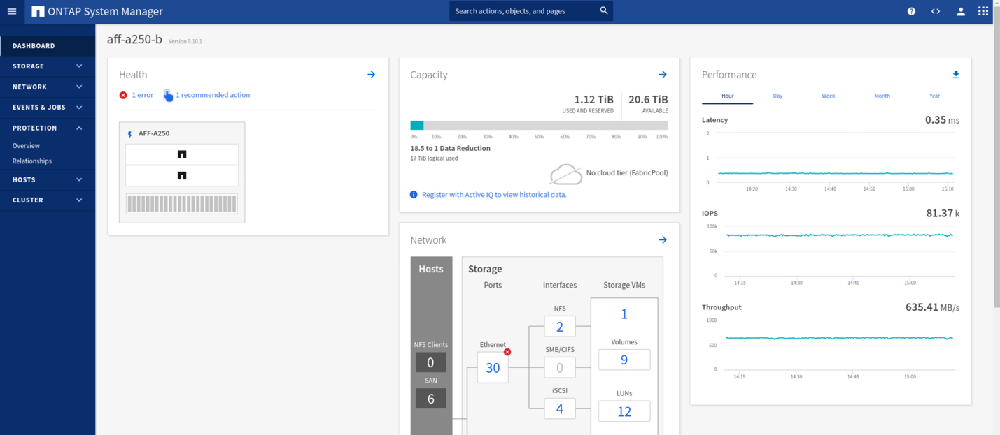
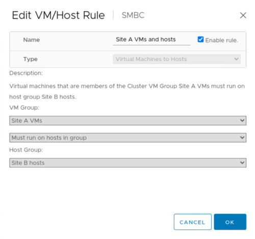
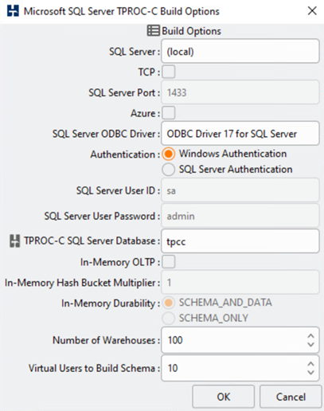

Request doc changes
Request doc changes Edit this page
Edit this page Learn how to contribute
Learn how to contributeSolution validation - Validated scenarios
Contributors
The FlexPod Datacenter SM-BC solution protects data services for a variety of single-point-of-failure scenarios as well as for a site disaster. The redundant design implemented at each site provides high availability, and the SM-BC implementation with synchronous data replication across sites protects data services from a sitewide disaster of one site. The deployed solution is validated for its desired solution functions and various failure scenarios for which the solution is designed to protect.
Solution functions validation
A variety of test cases are used to verify solution functions and simulate partial and complete site failure scenarios. To minimize duplication with the tests already performed in the existing FlexPod Datacenter solutions under Cisco Validated Design Program, the focus of this report is on the SM-BC related aspects of the solution. Some general FlexPod validations are included for practitioners to go through for their implementation validations.
For the solution validation, one Windows 10 virtual machine per ESXi host was created on all ESXi hosts at both sites. The IOMeter tool was installed and used to generate I/O to two virtual data disks that are mapped from the shared local iSCSI datastores. The IOMeter workload parameters configured were 8-KB I/O, 75% read, and 50% random, with 8 outstanding I/O commands for each data disk. For most of the test scenarios performed, the continuation of IOMeter I/O serves as an indication that the scenario did not cause a data service outage.
Since SM-BC is critical for business applications such as database servers, the Microsoft SQL server 2019 instance on a Windows server 2022 virtual machine was also included as part of the testing to confirm that the application continues to run when storage at its local site is not available and data service is resumed at the remote site storage without application disruptions.
ESXi Host iSCSI SAN boot test
The ESXi hosts in the solution are configured to boot from iSCSI SAN. Using SAN boot simplifies server management when replacing a server because the service profile of the server can be associated with a new server for it to boot up without making any additional configuration changes.
In addition to booting an ESXi host located at a site from its local iSCSI boot LUN, testing was also performed to boot the ESXi host when its local storage controller is in a takeover state or when its local storage cluster is completely unavailable. These validation scenarios make sure that the ESXi hosts are properly configured per design and can boot up during a storage maintenance or disaster scenario for disaster-recovery to provide business continuity.
Before the SM-BC consistency group relationship is configured, an iSCSI LUN hosted by a storage controller HA pair has four paths, two through each iSCSI fabric, based on the implementation of best practices. A host can get to the LUN through the two iSCSI VLANs/fabrics to the LUN hosting controller as well as through the high-availability partner of the controller.
After the SM-BC consistency group relationship is configured and the mirrored LUNs are properly mapped to the initiators, the path count for the LUN doubles. For this implementation, it goes from having two active/optimized paths and two active/non-optimized paths to having two active/optimized paths and six active/non-optimized paths.
The following figure illustrates the paths an ESXi host can take to access a LUN, for example, LUN 0. As the LUN is attached to the site A controller 01, only the two paths directly accessing the LUN via that controller are active/optimized and all the remaining six paths are active/nonoptimized.

The following screenshot of the storage-device-path information shows how the ESXi host sees the two types of device paths. The two active/optimized paths are shown as having active (I/O) path status, whereas the six active/non-optimized paths are shown only as active. Also note that the Target column shows the two iSCSI targets and the respective iSCSI LIF IP addresses to get to the targets.

When one of the storage controllers goes down for maintenance or upgrade, the two paths that reach the down controller are no longer available and show up with a path status of dead instead.
If a failover of the consistency group occurs on the primary storage cluster, either due to manual failover testing or automatic disaster failover, the secondary storage cluster continues to provide data services for the LUNs in the SM-BC consistency group. Because the LUN identities are preserved and the data has been replicated synchronously, all ESXi host boot LUNs protected by SM-BC consistency groups remain available from the remote storage cluster.
VMware vMotion and VM/host affinity test
Although a generic FlexPod VMware Datacenter solution supports multi-protocols such as FC, iSCSI, NVMe, and NFS, the FlexPod SM-BC solution feature supports FC and iSCSI SAN protocols typically used for business-critical solutions. This validation only uses iSCSI protocol- based datastores and iSCSI SAN boot.
To allow virtual machines to use storage services from either SM-BC site, the iSCSI datastores from both sites must be mounted by all the hosts in the cluster to enable migration of virtual machines between the two sites and for disaster failover scenarios.
For applications running on the virtual infrastructure that do not require the SM-BC consistency group protection across sites, NFS protocol and NFS datastores can also be used. In that case, caution must be observed when allocating storage for VMs so that the business-critical applications are properly using the SAN datastores protected by SM-BC consistency group to provide business continuity.
The following screenshot shows that hosts are configured to mount iSCSI datastores from both sites.

You have the option of migrating virtual-machine disks between available iSCSI datastores from both sites, as shown in the following figure. For performance considerations, it is optimal to have virtual machines using storage from their local storage cluster to reduce disk I/O latencies. This is especially true when the two sites are located at some distances apart due to the physical round-trip distance latency of roughly 1ms per 100Km distance.

Tests of vMotion of virtual machines to a different host at the same site as well as across sites were performed and were successful. After manually migrating a virtual machine across sites, the VM/Host affinity rule activates and migrates the virtual machine back to the group where it belongs under the normal condition.
Planned storage failover
Planned storage failover operations should be performed on the solution after initial configuration to determine whether the solution is working properly after storage failover. The testing can help to identify any connectivity or configuration problems which might lead to I/O disruptions. Regularly testing and resolving any connectivity or configuration problems helps to provide uninterrupted data services when a real site disaster occurs. Planned storage failover can also be used before a scheduled storage maintenance activity so that data services can be served from the unaffected site.
To initiate a manual failover of site A storage data services to site B, you can use site B ONTAP System Manger to perform the action.
-
Navigate to the Protection > Relationships screen to confirm that the consistency group relationship state is
In Sync. If it is still in theSynchronizingstate, wait for the state to becomeIn Syncbefore performing a failover. -
Expand the dots next to the Source name and click Failover.

-
Confirm failover for the action to start.

Shortly after initiating the failover of the two consistency groups, cg_esxi_a and cg_infra_datastore_a, on the site B System Manager GUI, the site A I/O serving those two consistency groups moved over to site B. As a result, the I/O at site A reduced significantly as shown in the site A System Manager performance pane.

On the other hand, the Performance pane of the site B System Manager dashboard shows a significant increase in IOPs, due to serving additional I/O moved over from site A, to about 130K IOPs, and reached a throughput of approximately 1GB/s while maintaining an I/O latency of less than 1 millisecond.

With the I/O transparently migrated from site A to site B, the site A storage controllers can now be brought down for scheduled maintenance. After the maintenance work or testing is completed and site A storage cluster is brought back up and operational, check and wait for the consistency group protection state to change back to In sync before performing a failover to return the failover I/O from site B back to site A. Please note that the longer a site is taken down for maintenance or testing, the longer it takes before data are synchronized and the consistency group is returned to the In sync state.

Unplanned storage failover
An unplanned storage failover can occur when a real disaster happens or during a disaster simulation. For example, see the following figure in which the storage system at site A experiences a power outage, an unplanned storage failover is triggered, and the data services for site A LUNs, which are protected by the SM-BC relationships, continue from site B.

To simulate a storage disaster at site A, both storage controllers at site A can be powered off by physically turning off the power switch to discontinue the supply of power to the controllers, or by using the storage controller service processors’ system power management command to power off the controllers.
When the storage cluster at site A losses power, there is a sudden stop of the data services provided by the site A storage cluster. Then, the ONTAP Mediator, which monitors the SM-BC solution from a third site, detects the site A storage failure condition and enables the SM-BC solution to perform an automated unplanned failover. This allows site B storage controllers to continue data services for the LUNs configured in the SM-BC consistency group relationships with site A.
From the application perspective, the data services pause briefly while the operating system checks the path status for the LUNs and then resume I/O on the available paths to the surviving site B storage controllers.
During the validation testing, the IOMeter tool on the VMs at both sites generates I/O to their local datastores. After the site A cluster was powered off, I/O paused briefly and then resumed afterwards. See the following two figures for the dashboards of the storage cluster at site A and site B respectively before the disaster which show roughly 80k IOPS and 600 MB/s throughput at each site.


After powering off the storage controllers at site A, we can visually validate that site B storage controller I/O increased sharply to provide additional data services on behalf of site A (see the following figure). In addition, the GUI of the IOMeter VMs also showed that I/O continued despite site A storage cluster outage. Please note that if there are additional datastores backed by LUNs not protected by SM-BC relationships, those datastores will no longer be accessible when the storage disaster occurs. Therefore, it is important to evaluate the business needs of the various application data and properly place them in datastores protected by SM-BC relationships to provide business continuity.

While the site A cluster is down, the relationships of the consistent groups show Out of sync status as shown in the following figure. After the power is turned back on for the storage controllers at site A, the storage cluster boots up and the data synchronization between site A and site B happens automatically.

Before returning data services from site B back to site A, you must check site A System Manager and make sure that the SM-BC relationships catches up and the status are back in sync. After confirming that the consistency groups are in sync, a manual failover operation can be initiated to return data services in the consistency group relationships back to site A.

Complete site maintenance or site failure
A site might need site maintenance, experience power loss, or might be affected by a natural disaster such as a hurricane or an earthquake. Therefore, it is crucial that you exercise planned and unplanned site failure scenarios to help ensure that your FlexPod SM-BC solution is properly configured to survive such failures for all your business-critical applications and data services. The following site-related scenarios were validated.
-
Planned site maintenance scenario by migrating virtual machines and critical data services to the other site
-
Unplanned site outage scenario by powering off servers and storage controllers for disaster simulation
To get a site ready for planned site maintenance, a combination of migrating affected virtual machines off the site with vMotion and a manual failover of the SM-BC consistency group relationships are needed to migrate virtual machines and critical data services to the alternative site. Testing was performed in two different orders: vMotion first followed by SM-BC failover and SM-BC failover first followed by vMotion, to confirm that virtual machines continue to run and data services are not interrupted.
Before performing the planned migration, update the VM/Host affinity rule so the VMs that are currently running on the site are automatically migrated off the site that is undergoing maintenance. The following screenshot shows an example of modifying the site A VM/Host affinity rule for the VMs to migrate from site A to site B automatically. Instead of specifying that the VMs now need to run on site B, you can also choose to disable the affinity rule temporarily so the VMs can be migrated manually.

After virtual machines and storage services have been migrated, you can power off servers, storage controllers, disk shelves, and switches and perform the needed site maintenance activities. When site maintenance is completed and the FlexPod instance is brought back up, you can change the host group affinity for the VMs to return to their original site. Afterwards, you should change the “Must run on hosts in group” VM/Host site affinity rule back to “Should run on hosts in group” so virtual machines are allowed to run on hosts at the other site should a disaster happens. For the validation testing, all virtual machines were successfully migrated to the other site and the data services continued without problems after performing a failover for the SM-BC relationships.
For the unplanned site disaster simulation, the servers and storage controllers were powered off to simulate a site disaster. The VMware HA feature detects the downed virtual machines and restarts those virtual machines on the surviving site. In addition, the ONTAP Mediator running at a third site detects the site failure and the surviving site initiates a failover and starts providing data services for the down site as expected.
The following screenshot shows that the storge controllers’ service processor CLI were used to power off the site A cluster abruptly to simulate site A storage disaster.

The storage clusters’ storage virtual machine dashboards as captured by the NetApp Harvest data collection tool and displayed in Grafana dashboard in the NAbox monitoring tool are shown in the following two screenshots. As can be seen on the right-hand side of the IOPS and Throughputs graphs, the site B cluster picks up the cluster A storage workload right away after site A cluster goes down.


Microsoft SQL Server
Microsoft SQL Server is a widely adopted and deployed database platform for enterprise IT. The Microsoft SQL Server 2019 release brings a lot of new features and enhancements to its relational and analytical engines. It supports workloads with applications running on-premises, in the cloud, and in hybrid could using a combination of the two. In addition, it can be deployed on multiple platforms, including Windows, Linux, and containers.
As part of the business-critical workload validation for the FlexPod SM-BC solution, Microsoft SQL Server 2019 installed on a Windows Server 2022 VM is included along with the IOMeter VMs for SM-BC planned and unplanned storage failover testing. On the Windows Server 2022 VM, SQL Server Management Studio is installed to manage the SQL server. For testing, the HammerDB database tool is used to generate database transactions.
The HammerDB database testing tool was configured for testing with the Microsoft SQL Server TPROC-C workload. For the schema build configurations, the options were updated to use 100 warehouses with 10 virtual users as shown in the following screenshot.

After the schema build options were updated, the schema build process was started. A few minutes later, an unplanned simulated site B storage cluster failure was introduced by powering off both nodes of the two node AFF A250 storage cluster at about the same time using system processor CLI commands.
After a brief pause of database transactions, the automated failover for the disaster remediation kicked in and the transactions resumed. The following screenshot shows the HammerDB Transaction Counter screenshot around that time. As the database for the Microsoft SQL Server normally resides on the site B storage cluster, the transaction paused briefly when storage at site B went down and then resumed after the automated failover happened.

The storge cluster metrics were captured by using the NAbox tool with the NetApp Harvest monitoring tool installed. The results are displayed in the predefined Grafana dashboards for the storage virtual machine and other storage objects. The dashboard provides metrices for latency, throughput, IOPS, and additional details with read and write statistics separated for both site B and site A.
This screenshot shows the NAbox Grafana performance dashboard for site B storage cluster.

The IOPS for the site B storage cluster was around 100K IOPS before the disaster was introduced. Then, the performance metrics showed a sharp drop down to zero at the right-hand side of the graphs due to the disaster. Since the site B storage cluster was down, nothing could be gathered from the site B cluster after the disaster was introduced.
On the other hand, the IOPS for the site A storage cluster picked up the additional workloads from site B after the automated failover. The additional workload can be easily seen on the right-hand side of the IOPS and Throughput graphs in the following screenshot, which shows the NAbox Grafana performance dashboard for site A storage cluster.

The storage disaster test scenario above confirmed that the Microsoft SQL Server workload can survive a complete storage cluster outage at site B where the database resides. The application transparently used the data services provided by the site A storage cluster after the disaster was detected and the failover happened.
At the compute layer, when the VMs running at a particular site suffers a host failure, the VMs are designed to automatically restart by the VMware HA feature. For a complete site compute outage, the VM/Host affinity rules allow VMs to be restarted at the surviving site. However, for a business-critical application to provide uninterrupted services, an application-based clustering such as Microsoft Failover Cluster or Kubernetes container-based application architecture is required to avoid application downtime. Please see the relevant document for the implementation of the application-based clustering, which is beyond the scope of this technical report.